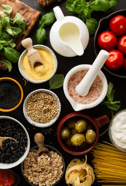

Os Segredos (Revelados!) do Strogonoff da Vovó Nonô
Muitos perguntam qual o segredo do nosso strogonoff ser tão especial. Bem, a Vovó Nonô sempre dizia que o principal ingrediente é o amor. Mas, além disso, temos alguns truques que fazem toda a diferença e que, com carinho, compartilhamos um pouquinho com vocês!
1. A Escolha dos Ingredientes: Frescor Acima de Tudo!
Não abrimos mão de ingredientes frescos e de alta qualidade. Nossas carnes são selecionadas, os cogumelos são sempre frescos (nada de conserva por aqui!), e o creme de leite tem que ter aquela textura aveludada. Acreditamos que a base de um bom prato começa na feira!
2. O "Flambado Mágico": Um Toque de Chef
Para os strogonoffs de carne e camarão, o flambado no conhaque não é só para impressionar. Ele adiciona uma camada de sabor caramelizado e profundo que é simplesmente divino. É um dos segredinhos que elevam nosso prato!
3. O Molho Secreto da Vovó: Equilíbrio Perfeito
Ah, o molho! Ele é a alma do nosso strogonoff. Uma combinação equilibrada de tomates frescos, páprica (doce e picante, na medida certa!), um toque de mostarda dijon e, claro, o creme de leite de primeira. A Vovó Nonô passava horas ajustando os temperos até atingir a perfeição cremosa que vocês conhecem.
4. Cozimento Lento e Com Paixão: Sem Pressa para o Sabor
A pressa é inimiga da perfeição, especialmente na cozinha. Deixamos nossos molhos apurarem lentamente, para que todos os sabores se integrem e criem aquela harmonia única. Cada strogonoff é preparado individualmente, com atenção e carinho.
Claro, ainda existem alguns segredinhos que a Vovó Nonô levou para as estrelas... mas o mais importante ela nos ensinou: cozinhar é um ato de amor. E é esse amor que colocamos em cada prato servido na Stroggonoferia!